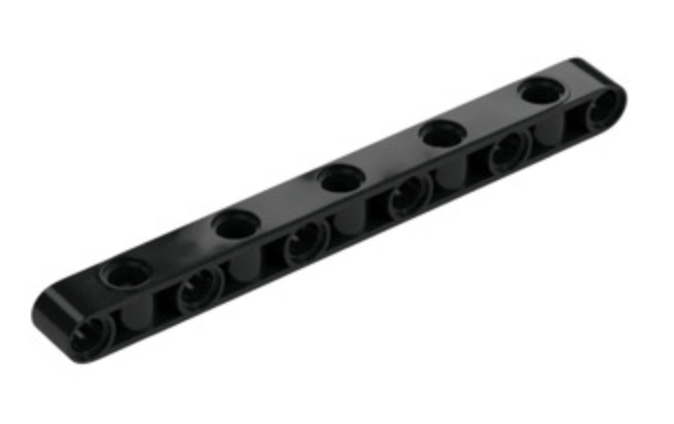

Introduction
Welcome to the Saline FIRST Robotics community, and thank you for volunteering to coach a FIRST LEGO League (FLL) Challenge team. Coaching is a significant commitment, but we are confident that you will find it to be one of the most rewarding experiences of your life. As FIRST co-founder Dean Kamen said, “We’re not building robots, we’re using robots to build kids.”
While our Saline FLL teams are often fiercely competitive, and enjoy a high degree of success at regional and state competitions, our primary goal is to teach children that they can achieve anything by identifying a meaningful problem, creating a solid plan, and working diligently with a dedicated team.
Central to the FLL experience are the FIRST Core Values. These values are the guiding principles that shape our program and are crucial for every team to embrace.
FIRST Core Values
- Discovery: We explore new skills and ideas.
- Innovation: We use creativity and persistence to solve problems.
- Impact: We apply what we learn to improve our world.
- Inclusion: We respect each other and embrace our differences.
- Teamwork: We are stronger when we work together.
- Fun: We enjoy and celebrate what we do!
- Gracious Professionalism: We encourage high quality work, emphasize the value of others, and respect individuals and the community.
Starting Your Team
Welcome to the new season! One of your first tasks as a coach is to reach out to the parents of your team members. This initial communication is crucial for setting expectations and ensuring a smooth and successful season.
You'll need to inform parents about the weekly practice schedule, emphasizing that these are required and letting them know the practice start date. It's also important to give them a heads-up about potential competition dates. While we won't know the exact dates until mid-season, they should be advised to keep the first and second weekends of December available.
Also, be sure to explain that while the weekly practices are mandatory, there will be several optional extra practices throughout the season. These sessions are designed to help the team be more competitive and feel a sense of accomplishment by the end of the season.
Sample Welcome Email
Here is a sample email you can adapt and send to your team's parents. Remember to replace the bracketed information with your specific details.
Subject: Welcome to the Saline FLL team [Team Name]
Dear Parents,
Welcome to the [Year] FIRST LEGO League season! I am the head coach for the [Team Name], and I am thrilled to have your child on our team. My phone number is [Phone Number].
This season promises to be an exciting journey of discovery, teamwork, and fun. We will be holding mandatory weekly practices on [Days of the week] from [Start Time] to [End Time] at Saline Middle School in the Media Center. Practices will begin promptly at [Start Time], so please ensure your child arrives on time. Please escort your child into the school every practice until you verify that two adult coaches are present. Once you've verified two coaches are present, you may leave.
While we do not have the exact dates for the competitions yet, they typically occur in early December. Please pencil in the first and second weekends of December for the regional competition. Should our team advance, the state competition is usually held on the second or third weekend of December. I recognize how difficult it is to set aside most of December for potential FLL competitions, but unfortunately, this is simply what we are forced to do every year.
Throughout the season, we will schedule several optional extra practices. These are not required but are highly encouraged to help the team be as prepared and successful as possible. We will provide more details on these as the season progresses.
Our primary goal is to foster a love of learning and problem-solving in a collaborative and supportive environment. We will be guided by the FIRST Core Values, and we expect all team members to do the same.
We are looking forward to a fantastic season with your children!
Best regards,
[Your Name]
Season Syllabus: August - December 2025
This syllabus outlines the major milestones for the FLL season.
- Late August: Season Kickoff! Teams are formed, and coaches receive their rosters. Coaches should contact their teams to introduce themselves and establish a regular practice schedule.
- Week of August 25: First practices. Focus on team-building activities and introduce the annual challenge. Begin brainstorming for the Innovation Project.
- September 3, 7:00-8:00 PM: Expert interview with Professor Natalie Abell, Ph.D., a professor of archaeology at the University of Michigan. All available teammates and coaches should attend, as this is a prime opportunity to learn about potential problems for the Innovation Project.
- September: Continue to work on the Innovation Project and begin building and programming the robot. NOTE: it is helpful to get your team's base robot built as quickly as possible. Prior to having that robot, the kids have infinite impossible ideas about what the robot can do. Once it's built they start to think more concretely about what is actually possible and useful.
- October: Develop and refine the robot's design and programming. A good plan for how the robot will perform the robot game should be coming together mid-late October. Finalize the Innovation Project and prepare the presentation.
- November: Practice, practice, practice! Run the robot on a practice table, refine the innovation project and robot design presentations, and ensure all team members are confident in their roles.
- Early December (Typically the first or second Saturday): Regional Competition.
- Mid-December (Typically the second or third weekend): State Competition (for advancing teams).
Anatomy of a Competition Day
FLL competitions are high-energy, all-day events that are both challenging and incredibly fun. Here’s what you and your team can expect:
-
Arrival and Pit Setup: Coaches arrive early in the morning to check in and set up their "pit" area. This is the team's home base for the day, where teammates can practice, make adjustments to their robot, and relax between judging sessions and matches.
-
Judging Session: There is a single judging session, which accounts for 75% of a team's overall score, so prepare your team well!
- More judging session information can be found in the Judging session scoring rubrics section
-
Robot Game Matches: Teams will compete in four 2.5-minute robot game matches throughout the day. The goal is to score as many points as possible by having their autonomous robot complete missions on the game field.
- Rules for the robot game can be found in the "Resources" section of the FIRST in Michigan website
-
Lunch and Downtime: There will be a break for lunch. There is often fairly little downtime at competition, so keep the teammates close by between robot runs and judging.
-
Awards Ceremony: The day concludes with an awards ceremony where teams are recognized for their achievements in the various judged areas and robot game performance.
Competition Dates:
- Regional Competition: Typically held on the first or second Saturday in December.
- State Competition: For advancing teams, this is usually held during the second or third weekend of December.
Judging sessions
The team's success at competition is primarily determined by their ability to speak with confidence and competence to adult judges, without any help from coaches. This is the judging session, during with the team will earn 75% of their overall score at competition.
In the past, our teams have typically prepared large tri-fold boards for the presentations in front of judges. One side contains information about their robot design process, and the other has information about their innovation project process. Consult the rubrics to calibrate the information your team should place on each side.
Judges should adhere to a schedule during the judging session. Coaches must familiarize themselves with the schedule and train their team to adhere to it during judging practice sessions.
Below is a link to the scoring rubrics from the 2024 FLL season. These will give you a good understanding of what the judges will be looking for during the competition.
The link will be updated when the 2025 season materials are available.
Items teams must bring to judging sessions
- Big board
- Their robot and attachments
- Binder containing team info sheet and printed code
Expectations of Coaches
This section outlines the expectations for coaches, including managing resources, maintaining shared spaces, and other administrative responsibilities.
Youth Protection and Two-Deep Mentorship
The safety and well-being of our students are our highest priority. To create a safe and accountable environment, we adhere to a strict two-deep mentorship policy. All coaches are required to follow these guidelines without exception.
Two-deep Mentorship
Under no circumstances should a coach ever be alone with either a single student, or a group of students. There must always be at least two adults present. This policy protects both the students and our volunteer coaches.
Texting
Many students have their own cell phones and may attempt to text you. Although, as a matter of practice, texting directly with teammates is to be discouraged, if this does happen, you must let their parent and the child know that any texts to or from the child must have the parent on the text thread as well. As a matter of principle, if a parent and child are both on the text thread, this is fine. But again, as a matter of practice, texting directly with a teammate is discouraged.
Handling Private Conversations
There may be times when you need to have a private conversation with a student, such as for a reprimand or to discuss a sensitive issue. To maintain transparency and safety, these conversations must be handled in one of two ways:
- In the Open: The discussion can take place in an area set apart from the main group but still in full view of the other people in the media center.
- With a Second Adult: If more privacy is required, you may use one of the glass rooms at the back of the media center. However, a second adult must accompany you and the student into the room.
Drop-Off and Pick-Up Procedures
To ensure the two-deep mentorship rule is followed from the very start of practice, coaches must enforce the following drop-off procedure:
- Parent Escort: Parents must walk their child into the media center at drop-off.
- Confirming Two Adults: The parent must verify that at least two coaches are present before they leave.
- Parent Must Wait: If a parent arrives and only one coach is present, the parent is required to stay until a second coach or another designated adult arrives.
Maintaining Shared Space
All of the following are tasks we expect coaches to delegate to the teammates. They must learn to take care of our equipment and space, and this is fundamental to that learning.
Team Bins
At the end of each practice, it is the responsibility of the coaches to ensure that their team's two designated bins are neatly placed on their assigned shelves in the storage room. While teammates should be encouraged to perform these cleanup tasks, coaches must verify that the space is left organized. In the past, the shared space has become disorganized, creating frustration for everyone. Responsible management of our shared space is critical.
Robot Game Boards
The robot game boards must be neatly lined up against the wall for the robotics room at the end of practice.
Computers
Computers must be placed neatly in their vertical storage slots, and their charging cables either plugged into the laptops, or neaty wrapped and placed in the roll-up cabinet in the robotics room.
LEGO
All unused LEGO is picked up, including off the floors, and placed in the correct yellow container of the cart we use to move LEGO.
Robots
Robots should be stored on the top shelf of the roll-up cabinet in the robotics room.
Locking Up
If you are the last coach with a key leaving for the evening, you must lock the storage room and the robotics room on your way out of the school
Managing Resources
Our club has a significant collection of LEGOs for teams to use. However, with four teams sharing these resources, coaches must ensure their team is using only its fair share. In the past, we have run out of commonly-used lego pieces, such as black pins, which should never happen. For some less commonly-used pieces, when we run low, it is the coaches' responsibility to let Jeremy know so that he can order more. Please monitor your team's use of shared LEGOs, and the club's stock of LEGO, so that all teams can have a positive experience.
Each team is entitled to the following:
- Two Spike Prime hubs
- Four small motors
- Four large motors
- Four light sensors
Please do not use more than your allotted share of the above items. The above list comprises the necessary elements to build two identical robots. We typically recommend teams build two identical robots. This allows each team to program robot missiong in parallel, and it provides robustness on competition day. Sometimes a hub fails. You don't want your team to be without a functioning robot at competition!
Our club has two folding robot game tables and one flat table that must be carried by two people to the tables in the media center, and clamped to the tables to be flattened. Two of our teams' regularly-scheduled practices are on Monday/Wednesday, and two are on Tuesday/Thursday.
- Your team is only entitle to use a folding table on your regularly-scheduled practice day! If your team has extra practice scheduled on other teams' regular practice days, plan to use the flat table, leaving the folding table to the other two teams.
Innovation project resources
Teams must decide what extra items they need to purchase to build their innovation project. Our club has sufficient financial resources that a team can spend up to $400 on their innovation project, if necessary. If your team needs to spend more, please consult with Jeremy. He may request that you seek sponsors to donate funds to help fund the club.
Special LEGO pieces
There are certain specialized LEGO pieces that should only be used in special cases, whereas other LEGO pieces that are less expensive can be used in most other cases.
- 2-axis beams are extremely useful for changing the axis along which you're pinning LEGO. We have a handful of 2-axis beams. Kids typically do not recognize the distinction between the 2-axis beams and a standard beam, for which all holes align along the same axis. If you see your teammates using 2-axis beams when a single-axis beam will work, direct them to use the single-axis beam instead. For reference, single axis beams are about 4 cents per piece, wherease 2-axis beams cost about 20 cents per piece.
Example image of 
- Friction-free pins are used when pinning an item that must be able to rotate freely around the axis defined by the pin. The standard black pins we have are not friction-free. The gray and yellow pins are friction free, and should only be used when rotation is desired. For all other applications, black pins should be used.
Reimbursement of Expenses
Coaches can be reimbursed for team-related expenses and should expect to spend between tens to low-hundreds of dollars on supplies for the Innovation Project.
Important: You cannot be reimbursed for tax. If you wish to make a tax-free purchase, please contact Jeremy Schroeder at saline.fll@gmail.com. He can work with the school to facilitate the purchase, which can result in significant savings.
To get reimbursed, follow this instruction guide.
Reserving the Media Center for Extra Practices
To reserve the middle school media center for extra practices (usually on Saturdays), please determine the desired dates and times as early as possible. Email Laurie Dawson (dawsonl@salineschools.org) with a list of all requested dates and times, along with the names of the adults and children who will be present. Laurie will confirm the reservations or let you know if the space is unavailable.
Expectations of Teammates
This section outlines the behavioral expectations for all team members. Coaches should foster an environment of respect among teammates.
Code of Conduct
All team members are expected to adhere to the Saline Heritage Elementary FIRST LEGO League Code of Conduct. If a team member consistently causes issues or repeatedly fails to comply with the Code of Conduct, coaches have the authority to call parents for early pickup from practice, suspend the child from practice, or, in serious cases, expel the teammate from the team.
By the end of the second week of practice, all parents and teammates must read, sign, and return the Code of Conduct.
You can find the Code of Conduct here
Coaching Resources
This section provides a collection of resources accumulated over the years to help simplify coaching and enhance the learning experience for your team.
Programming a robot
We are using Pybricks Code for the first time this year to program our robots. Our four teams typically share code snippets frequently for commonly-used routines such as line following or squaring off to a line.
If you need your pybricks license, contact Jeremy.
Please consider taking a simple bot home with you and reading through the pybricks guide to get you started!
We also have some simple example scripts that can be dowloaded from google drive and read into pybricks' web interface to help get you started.
Who do I contact for...
- Tax-free purchases and general FLL questions:
- Jeremy Schroeder: saline.fll@gmail.com
- Reserving the middle school media center:
- Laurie Dawson: dawsonl@salineschools.org
Links to FIRST Resources
For team management. Jeremy will do much of this for you, but he will occasionally let you know when you need to take action via your FIRST dashboard to ensure your team can participate in competition.
The FIRST in Michigan website is a wealth of information. At this site you can find rulebooks, judging rubrics, event readiness information, and team event assignments for regional and state competitions.
YouTube Videos and Channels
Expert interview questions
Robot Data Sheet
This section is under development. It will contain a template for teams to document their robot's design and features.
Mission Data Sheet
This section is under development. It will contain a template for teams to plan and track their robot game missions and scores.
Core Values Specialist Sheet
This section is under development. It will contain a worksheet to help teams focus on and demonstrate the FIRST Core Values.
Skills Specialist Sheet
This section is under development. It will contain a template to help teams identify and develop the different skills needed for a successful season.